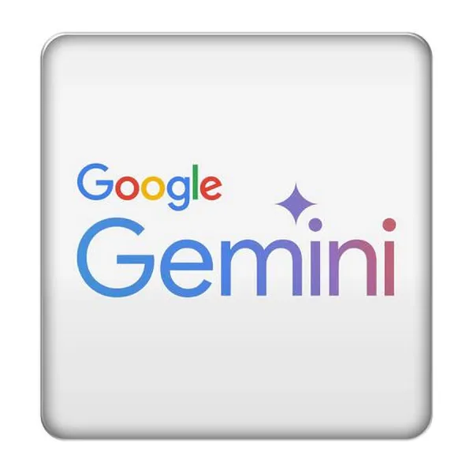
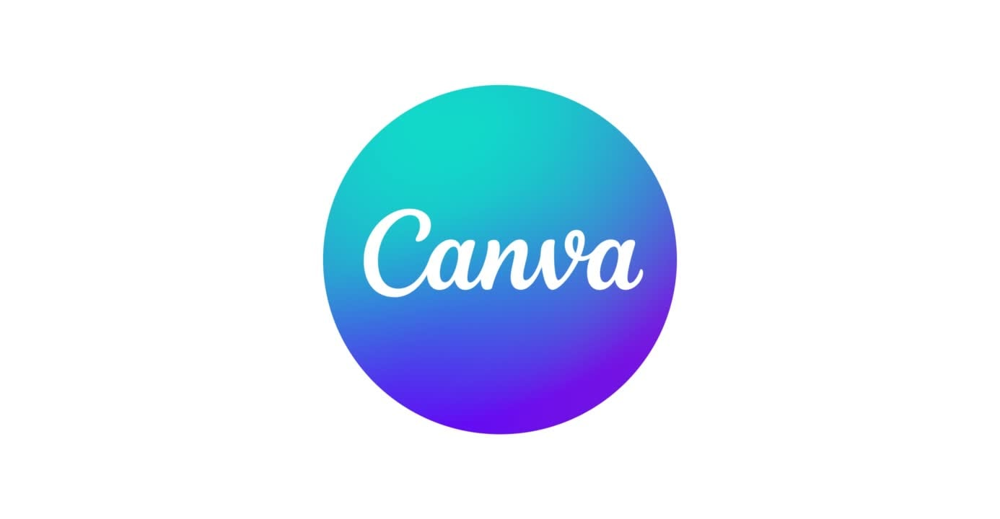
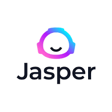
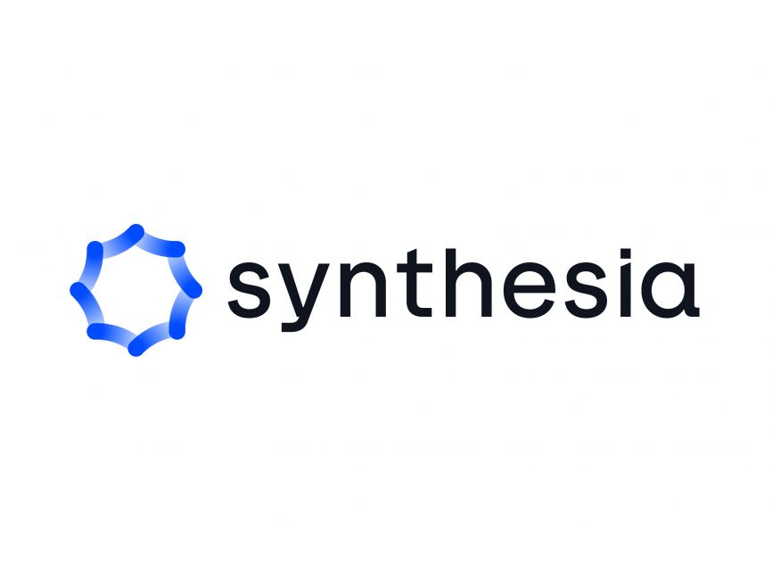

| S.No | Name of AI Tool | Logo | Use of Tool | Official Link |
|---|---|---|---|---|
| 1 | ChatGPT | Used for chatting, coding, content writing, and learning. | Visit | |
| 2 | Google Gemini |  |
AI assistant by Google for writing, research, and coding. | Visit |
| 3 | Midjourney | Creates high-quality AI images from text prompts. | Visit | |
| 4 | Claude AI | AI chatbot for research, writing and analysis. | Visit | |
| 5 | Copilot | Helps developers write and complete code faster. | Visit | |
| 6 | Canva AI |  |
AI design tool for posters, presentations, and graphics. | Visit |
| 7 | Notion AI | Helps in note-taking, summarizing, and task management. | Visit | |
| 8 | Grammarly AI | Improves grammar, spelling, and writing quality. | Visit | |
| 9 | Runway ML | AI video editing and generation tool. | Visit | |
| 10 | Perplexity AI | AI-powered search engine for research. | Visit | |
| 11 | Jasper AI |  |
Content writing and marketing copy generation. | Visit |
| 12 | Synthesia |  |
Creates AI videos with virtual avatars. | Visit |
| 13 | DALL·E | Generates AI images from text descriptions. | Visit | |
| 14 | DeepL | AI-powered language translation tool. | Visit | |
| 15 | Zapier AI | Automates workflows between apps using AI. | Visit | |
| Total AI Tools Listed: 15 | ||||